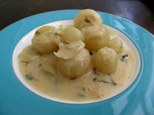

Home
Vermouth Cream Gnocchi

Ingredients
- 3 cups - White Wine
- 3 Chopped Shallots
- 1 Sprig of Thyme
- 6 oz - Heavy Whipping Cream
- 3 oz - Butter
- 3 tbsp - Vermouth
- Salt and Pepper to taste
- 1 package of prepared Gnocchi
Instructions
- Star cooking white wine, thyme, and shallots together and reduce wine to 2 tbsp
- Add the heavy whipping cream and bring to a boil
- Add the butter in small cubes. Whisk well and boil for one minute.
- Add the vermouth, remove the thyme, and add salt and pepper to taste.
- Toss in the gnocchi, cook together for one minute, and serve.